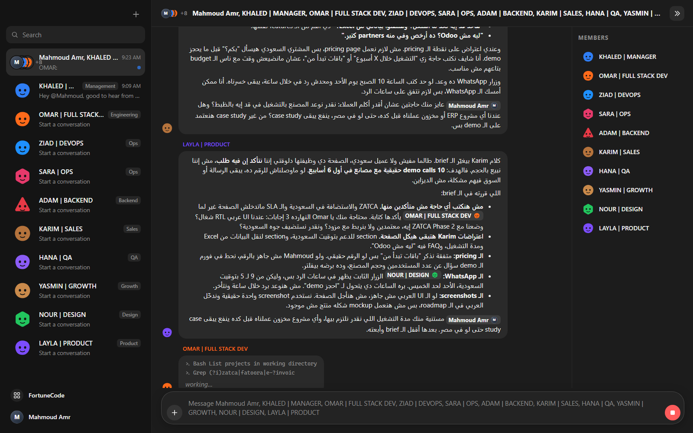

Employees with personas, roles and real tools who reply to you and to each other. Runs locally on the Claude, ChatGPT (Codex) or Gemini plan you already pay for, or any API. No Cursor Pro, no SuperGrok, no trial that ends.

Same idea. Different ownership.
| Grok Bot (xAI / Cursor) | OpenGrokBot | |
|---|---|---|
| Price | Cursor Pro or SuperGrok; the free trial ends | Free. Uses the Claude / ChatGPT / Gemini plan you have, or any API key |
| Models | Grok only, chosen by Cursor's cloud | Claude Opus/Sonnet/Haiku, GPT/Codex, Gemini, Kimi, DeepSeek, Grok via xAI API, local Ollama, per employee |
| Where it runs | Cursor's cloud computer | Your machine; nothing leaves it except calls to the provider you chose |
| Employees talk to each other | ✓ | ✓ Mentions, rounds, muting, "mentions only" mode |
| Real tools | ✓ | ✓ Files, shell, web, subagents, MCP servers |
| Edit employees | Name, label, description | Provider, model, effort, personality, tools, permissions, folder, MCP, mute, duplicate |
| Usage & limits | Plan usage only | Tokens and cost per message / employee / chat / model, Claude limit windows |
| Arabic / RTL | Partial | ✓ Native RTL, Egyptian Arabic replies |
| Source | Closed | MIT, TypeScript |
Ten employees ship in the box. Add your own in two clicks.
Mention someone and only they answer. Post something general and everyone weighs in, seeing each other's replies. Colleagues pull each other in with @mentions. Rounds are capped, so nobody loops.
Read repos, grep, edit files, run commands, search the web, in your workspace, with permissions per employee. Tool activity streams live under the message.
Claude Code, Codex CLI and Gemini CLI use their own logins. Or paste an API key: Kimi, OpenRouter, DeepSeek, Groq, xAI, Mistral, OpenAI, Ollama.
GitHub, Playwright (a real browser), Postgres, Supabase, Slack, Notion, Context7, Vercel, Chrome DevTools… one click each, enabled per employee.
Tokens and API-equivalent cost per message, employee, conversation and model. Your Claude limit windows with reset times.
Electron window with the Grok Bot look: avatar shapes, colored role labels, mention pills, RTL. Or just open it in a tab.
The owner writes Arabic, so the team answers in Egyptian Arabic. Technical terms stay English.
Node 20+ and at least one signed-in CLI: claude, codex login or gemini. Or an API key.
git clone https://github.com/Z4YT0N/OpenGrokBot cd OpenGrokBot npm install npm run build npm run desktop # desktop window # or: npm start # http://127.0.0.1:4310
Yes, this one. OpenGrokBot is MIT licensed and runs locally. The only cost is whatever AI plan you already have (Claude, ChatGPT, Gemini) or the API you point it at. A free local model through Ollama works too.
Grok Bot itself can't; its models are picked by Cursor's cloud. OpenGrokBot was built for exactly that: each employee runs on Claude Code, Codex CLI, Gemini CLI or an API of your choice.
Yes. It drives Claude Code through the official Agent SDK, which uses your existing claude login. Any ANTHROPIC_API_KEY in your environment is ignored unless you add a key on purpose.
Yes, add xAI as an API provider and give an employee grok-4 or grok-code-fast-1.
No. Grok Bot is xAI/Cursor's product and Oracle's OpenGrok is an unrelated code-search engine. OpenGrokBot is an independent open-source project.
أيوه، OpenGrokBot. مفتوح المصدر وبيشتغل على جهازك باشتراك Claude أو ChatGPT أو Gemini اللي عندك، أو أي API. وبيرد بالعربي المصري.